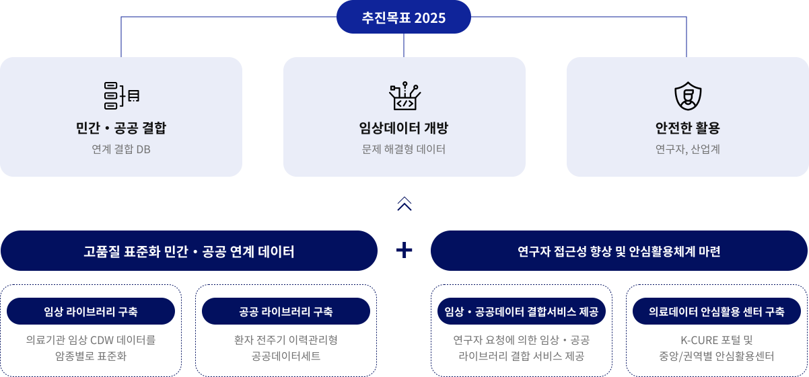

K-CURE 사업 개요
K-CURE 빅데이터 연구 생태계 조성
・ 임상+공공, 건강검진, 사망통계 등 다양한 데이터 결합의 필요성 대두
・ 질환별 빅데이터에 대한 접근성 향상 시급
・ 임상 및 공공데이터를 결합한 연계 서비스 제공 및 안심활용센터를 구축하여 데이터 활용 개방을 위한 연구 생태계 조성
・ 질환별 라이브러리 구축 및 데이터 활용 기반 마련
・ 선행 모델의 임상 데이터 네트워크 조성
・ 암 데이터의 우향적 연구를 위한 데이터 구축
・ 안전하고 다양한 분석지원을 위한 안심활용 플랫폼 구축
・ 데이터 활용을 위한 공동 협의체 구성 및 관리 체계 수립
데이터 맵
연구지원
연구컨설팅
데이터 관제